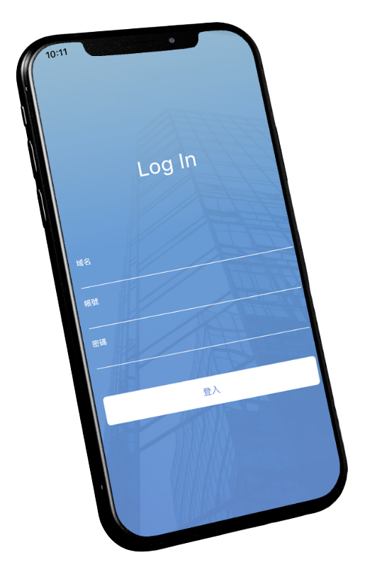
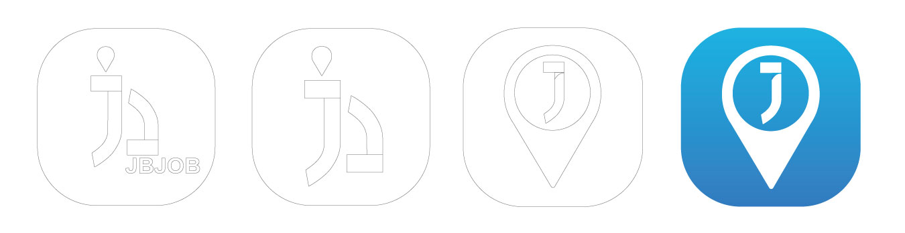
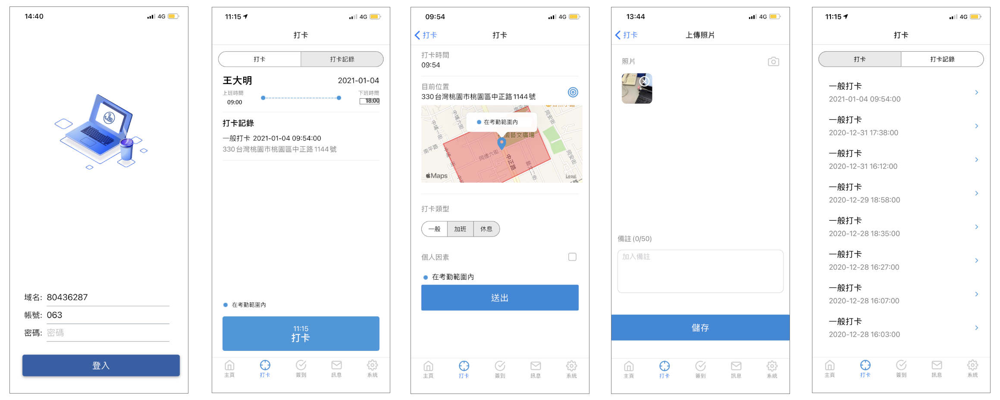
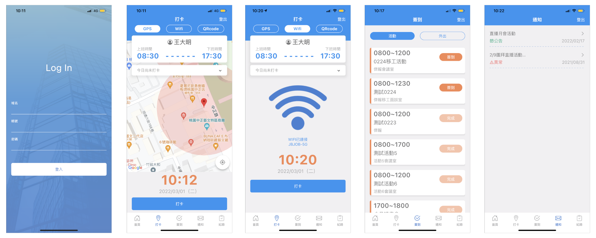
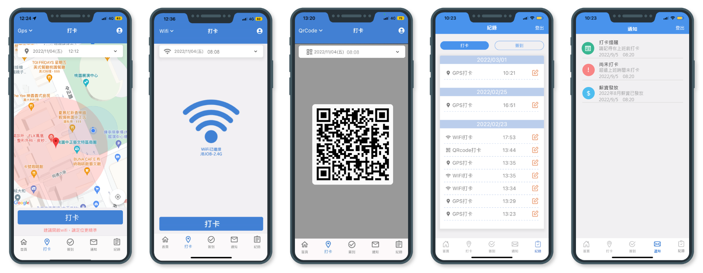

JBHR 行動打卡
是一款具有GPS、Wifi與QRcode三種不同打卡方式的打卡APP。打卡介面簡潔，一鍵就能打卡，還具備打卡紀錄、簽到與通知功能。
HR透過後台管理，針對不同上班時段或地點之人員進行相關設定，也能夠針對公司內部活動進行活動的簽到設置。
此APP經過2次優化，不論是UI設計上的改良，也不斷改善使用者對此APP認知與感受。
專案角色：產品視覺設計、UI/UX設計，且與工程師一同討論功能效果呈現及可執行方案
APP Icon 設計
Icon設計構思是由打卡的定位符為出發，且與公司行銷考量需放上公司英文簡寫「JB」為主軸而設計。
設計版本由左至右演進，第一款設計是以公司英文縮寫為主軸，定位點的符號呈現過小，因此不意一眼得知此為打卡APP。 最後是以定位點符號為主體意象，並且與公司英文縮寫「J」代表結合而成。

設計版本由左至右演進，第一款設計是以公司英文縮寫為主軸，定位點的符號呈現過小，因此不意一眼得知此為打卡APP。 最後是以定位點符號為主體意象，並且與公司英文縮寫「J」代表結合而成。
APP版本一
此APP專案為安綺第一個為公司進行視覺與UI/UX優化項目之一。因此APP先前是由外包設計製作而成，在沒有完整設計規劃下，進而產生問題：

- 缺少產品視覺與UI設計。
- 操作過於複雜，讓使用者進行繁瑣步驟才能完成打卡(例：讓使用者在三個頁面進行打卡流程)。
- 資訊呈現不妥，導致使用者認知上錯誤。
APP版本二
為改善上述提及問題，將重新定義APP主、副色以及配色與視覺呈現。
並且簡化打卡繁瑣步驟，讓使用者在一頁上兩個步驟就能完成打卡。
在UI呈現上以地圖為主，是因使用者必須得知，自己是否在打卡範圍內，因做了大幅度的UI設計更動。

APP版本三
雖在第二版本將APP重新包裝、規劃後，相較於第一版本讓使用者體驗與認知做非常大的改善，
但在第二版本打卡功能中，打卡頁面上半部顯的資訊顯示打卡模式、上班時間以及今日打卡資訊，占了畫面的3/1，且資訊呈現過多，讓使用者視覺失焦。
為了改善此問題，在設計上將打卡功能收合，也移除上班打卡資訊，因此讓重點地圖的畫面再加大，主題性更明顯。

下一個專案：員工Portal網站